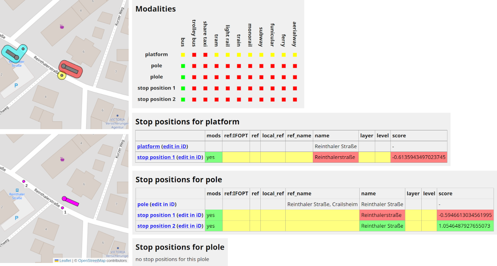
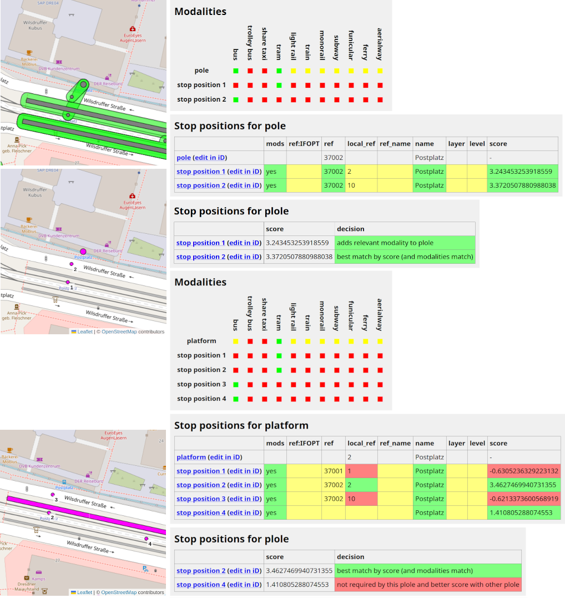

PTSA is an interactive map showing structure and properties of public transport stops in the OpenStreetMap data base (OSM). It's main pupose is to find tagging mistakes and inconsitencies in OSM.
OSM's standard map (here referred to as 'Carto rendering') does not fully support the PTv2 tagging scheme. Consequently, some public transport stops do not appear on the map. PTSA shows all stops. In addition, PTSA color-codes which stops use old tagging ('PTv1'), which stops use PTv2 only, and which stops use mixed tagging.
Public transport stops in OSM may consist of several objects only loosely related by identical name tags or alike. PTSA tries to find all objects belonging to a stop and shows them as one object group on the map.
PTSA may be used as kind of validator. It adds comments and warnings to shown OSM objects and also identifies objects that look somehow related to public transport but cannot be categorized further ('dubious objects').
For stops consisting of more than one object, there's no straight-forward way to determine a precise location (a point on the map). PTSA computes virtual poles (if there is no pole object) located on the platform close to the stop position.
Zooming in, single points (each representing an abstract stop object) disperse into several OSM objects making up the stops. All objects belonging to one stop are surrounded by a line marking an abstract stop area (not to confuse with PTv2's stop areas). You can click each object and the surrounding stop area to get additional information.
If you click a stop area (not an object inside this area) you see a link 'Plole details'. In PTSA a plole is the waiting area for passengers. This may be a pole node or a platform way/area or both together, depending on the stop's data in OSM.
In PTSA a stop has at most three objects: a stop position (where the vehicle stops), a pole (node where passengers should wait), a platform (way/area where passengers should wait). At least one of these objects has to exist. This is very similar to the stop areas in the Refined Public Transport Proposal.
Stops mapped with only one platform for several stop positions appear in PTSA as multiple stops (one stop per stop position). If there are several poles/platforms using a shared stop position, then PTSA generates as many stops as there are poles/platforms. See below for details on the matching process.
There are four coloring modes:
The plole (= platform/pole/both) details page shows (almost) all information PTSA uses to determine which OSM objects belong to one and the same stop. This includes modalities supported by the objects, relevant tags, and scores computed by PTSA based on tags and distances.
The information show may be used to understand why PTSA wasn't able to match objects which belong to one stop and to get an idea how to edit OSM data to get correct matches. Details on the scoring scheme are provided below.
PTSA follow a four-stop-procedure for combining OSM objects to stops:
For each pole/platform only nearby stop positions are considered (maximum distance is 30/20 meters for poles/platforms). Scoring has three components:
The score is d plus the weighted sum of the tag matching values: score = d + w1t1 + ... + w7t7.
The 7 keys considered and their scores are: ref:IFOPT (10), ref (2), local_ref (2), ref_name (1), name (1), layer (2), level (2).
Tag matching values are computes differently for each key. The principle approach is, that 0 refers to 'tag not available', 1 refers to 'equal values for both objects', -1 refers to 'different values'. String comparison does not require full equality. IFOPT comparision respects to structure of IFOPTs (from general to more specific). See PTSA's source code for details (backend/process_one.py, score_stopos_to_ploles function).
Distance values are transformed to the interval [0, 0.5] with 0 for large distances (above 30/20 meters for poles/platforms) and 0.5 for distance 0. Keeping the distance score component below 1 ensures that distance is only relevant for matching decisions if all tag values coincide.
It's almost the same as for stop positions vs. poles/platforms. The only differences are:
backend/process_one.py, score_poles_to_plafos function).If a pole matches a platform, then for each nearby stop position there are two scores, one with respect to the pole and one with respect to the platform. The score for matching stop positions to ploles is the mean of both scores.
The assignment process of stop positions to ploles is as follows:
We see two stops, each consisting of a pole and a stop position. Both stop positions are sufficiently close to each pole to maybe belong to each pole. Both stop positions serve modalities compatible with both poles. Both poles and both stop positions have identical name tags. Other relevant tags are not available. Thus, the only criterion for score based matching is the distance of each stop position to each pole.
Both stop positions have positive score for both poles. Thus, in principle both stop positions could be related to each of the two poles. PTSA here assumes, that one stop position per pole is the standard. More than one stop position per pole is only considered relevant if there's another stop position not matching any other pole.
The platform of interest has many nearby stop positions. The closest one is stop position 4. But layer an level differ. The more distant stop position 3 has matching tags. Thus, PTSA chooses this one.

Platform and pole are correctly matches. But the platform has no matching stop position due to slight differences in the name tags. The pole matches the wrong stop position due to incorrect name tags. Consequently, no stop position is assigned to the plole. PTSA creates two stops, one without plole and one without stop position. Here OSM data should be corrected.

From object locations on the map we easily deduce that there is a bus pole, a tram platform, a bus stop position on the road and a tram stop position on the tram tracks. But PTSA shows three stops: the pole is used for a bus stop and for a tram stop. The reason is that the pole has a tram=yes. Thus, PTSA assigns the tram stop position not only to the platform but also to the pole, because this stop position serves a modality the pole supports and the pole has no other stop position nearby for this modality. This is a tagging mistake in OSM.